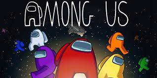

juegos
GTA 5

Juego para mayores de 18 años esta creciendo gracias a los participantes de Marbella vice, serie rolplay dirigida por JackyMaster conocido como CoolLife en youtube este titulo tiene un modo historia lleno de accion donde podras controlar a los 3 personajes principales y un multijugador donde puedes crear tu propio personaje, esta ultimo modo de juego es lo que esta llevando a la cima al gran juego de accion, lamentablemente se debe pagar para poder jugar
Among us
Su ultima actualizacion nos dejo ver el avion de uno de los viejos juegos de los creadores, con un monton de easter egg, el juego es simple, 10 jugadores hasta una capacidad de 3 impostores/asesinos, el objetivo para los tripulantes sera encontrar a los impostores y completar todas las tareas, en caso de que alguna de las 2 se complete ganaran el juego y perderan los impostores, en caso de que los impostores maten a todos o hagan que los tripulantes no puedan arreglar un saboteo la victoria sear para los impostores ¿te atreves a jugar?
League of Legends

"Bienvenidos a League of legends" ese anuncio que aparece cada 5 minutos en anuncios de youtube y ahora mas con su version movil. se trata de un multijugador en linea que consiste en derribar la estructura rival llamada "nexo" y tendras 4 aliados para hacerlo, con una gran cantidad de campeones para usar, miles de items e infinitas combinaciones
Fortnite

Ya en su segundo capitulo y sexta temporada, este juego trata de superar los 2 anteriores puestos con grandes cambios en su mapa, armas nuevas, materiales nuevos y vehiculos nuevos, tratando de sobrevivir en una isla donde 100 jugadores pelearan para ser el ultimo en pie, con la salida de la Skin de Neymar.Jr mas jugadores se unieron y se esperan muchas mas aventuras dentro del este juego